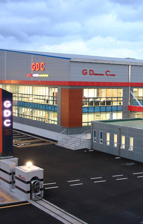
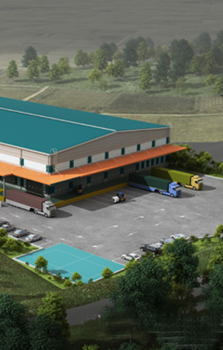
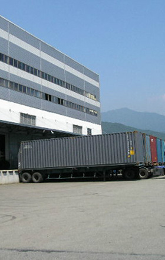

QUICK

- 2017
- 신 WMS Service 개시 _New G-WMS
- 2015
- 양산ICD 냉장창고 설비
- 2014
- 부산 신항센터 증축 _약 2,000평 규모
- 2013
- 수도권 메인 센터 건립 및 이전 _용인 약 6,000평 규모
부산 신항센터 건립 및 입주 _웅동 약 12,000평 규모


- 수도권 메인 센터 확장 및 이전 _안성
부산 신항 배후물류단지 입주 선정
- 2010
- 주식회사 지아이지 법인 전환
부산 신항 배후물류단지 오픈
- 2008
- 수도권 메인 센터 오픈 _덕평
- 2005
- 양산센터 건립 (본사)
- 2002

- 2000
- 자체 WMS 개발 및 도입 _G-WMS
- 1999
- 기흥 물류센터 업무 개시 _크로스도킹
- 1997
- 3PL 물류서비스 개시 _다국적물류 아웃소싱
- 1996
- 자체 물류창고 건립 _양산
- 1994
- 수출입 물류토탈서비스 제공
- 1993
- 한국해운 물류센터 설립, 보세창고 운영